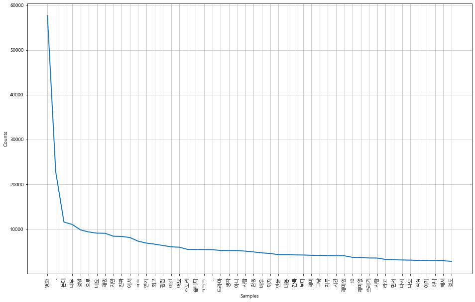

NSMC 감성분석 - 감정분석
dataframe이 짤라서 보일때 웹페이지를 축소해서 보시길 바랍니다~^^(50%이면 다 보일것입니다)
NSMC로 감정 분석(텍스트 분류) 하기
Reference : https://www.kdnuggets.com/2018/03/5-things-sentiment-analysis-classification.html
1. 감정분석이란?
-
Natural Language Processing, Text Analysis, Computational Lingustics, biometrics 같은 방법을 이용하여 텍스트에 숨겨져있는 저자의 의도나 정보를 찾아내는 모든 방법들을 말한다.
-
Opinion Mining, Sentiment Mining, Subjectivity Analysis 라고도 불리기도 한다.
-
초반의 방법들은 텍스트의 극성(Polarity)를 찾기 위해 많이 시도되었다. 대표적인 예로 긍정/부정으로 나누는 케이스가 있다.
-
감정 분석은 크게 Knowledge-based approach, Machine Learning-based approach가 있다.
Knowledge-based는 알려진 어구, 어미, 관용 표현등을 활용하여 이미 문서들을 human expert가 평가한 데이터를 가져와 평가하는 방법이다.
ML-based approach는 supervised, unsupervised 방법이 있다. 최근 pretrained Language Model이 비약적으로 발달함에 따라 unsupervised 방법의 성능도 많이 높아졌지만, 아직까지는 성능면에선 supervised가 월등히 높다.
- 따라서, 가장 많이 쓰이는 방법인 text classification으로서의 sentiment analysis를 공부해보고, 추가적으로 생각해볼 여러 가지 이슈에 대해 고민해보는 시간을 가진다.
2. 텍스트 분류란?
-
벡터 형태로 표현된 텍스트를 말그대로 분류하는 방법이다.
-
DNN이 비약적으로 성능 향상을 가져오기 전까지는 SVM이 가장 많이 사용되었다.
-
현재는 CNN, LSTM을 분류 모델로 가장 많이 사용한다.
-
실제로 텍스트 분류 작업은 큰 범위에서 대부분의 NLP downstream task를 포함한다.
-
하나의 예로, Siamese Network라는 걸 통해서 Question-Answering pair를 학습하게 되면, 분류의 기준이 “특정 질문에 맞는 정답을 잘 골랐는가 아닌가(0 / 1)”를 해결하는 문제로 바뀌게 된다.
3. scikit-learn으로 NSMC 감정분석 하기
- 저번 시간에 했던 코드를 그대로 가져와, nsmc를 불러옵니다.
def read_documents(filename):
with open(filename, encoding='utf-8') as f:
documents = [line.split('\t') for line in f.read().splitlines()]
documents = documents[1:]
return documents
train_docs = read_documents("ratings_train.txt")
test_docs = read_documents("ratings_test.txt")
print(len(train_docs))
print(len(test_docs))
150000
50000
def text_cleaning(doc):
# 한국어를 제외한 글자를 제거하는 함수.
doc = re.sub("[^ㄱ-ㅎㅏ-ㅣ가-힣 ]", "", doc)
return doc
def define_stopwords(path):
SW = set()
# 불용어를 추가하는 방법 1.
# SW.add("있다")
# 불용어를 추가하는 방법 2.
# stopwords-ko.txt에 직접 추가
with open(path) as f:
for word in f:
SW.add(word)
return SW
def text_tokenizing(doc):
return [word for word in mecab.morphs(doc) if word not in SW and len(word) > 1]
# wordcloud를 위해 명사만 추출하는 경우.
#return [word for word in mecab.nouns(doc) if word not in SW and len(word) > 1]
- 불러온 데이터를 품사 태그를 붙여서 토크나이징합니다.
from konlpy.tag import Mecab
from konlpy.tag import Okt
import json
import os
import re
from pprint import pprint
okt = Okt()
mecab = Mecab(dicpath='C:\mecab\mecab-ko-dic')
SW = define_stopwords("stopwords-ko.txt")
if os.path.exists('train_docs.json'):
with open("train_docs.json", encoding='utf-8') as f:
train_data = json.load(f)
else:
train_data = [(text_tokenizing(text_cleaning(line[1])), line[2]) for line in train_docs if text_tokenizing(line[1])]
#train_data = [(text_tokenizing(line[1]), line[2]) for line in train_docs if text_tokenizing(line[1])]
with open("train_docs.json", 'w', encoding='utf-8') as f:
json.dump(train_data, f, ensure_ascii=False, indent='\t')
if os.path.exists('test_docs.json'):
with open("test_docs.json", encoding='utf-8') as f:
test_data = json.load(f)
else:
test_data = [(text_tokenizing(text_cleaning(line[1])), line[2]) for line in test_docs if text_tokenizing(line[1])]
#test_data = [(text_tokenizing(line[1]), line[2]) for line in test_docs if text_tokenizing(line[1])]
with open("test_docs.json", 'w', encoding='utf-8') as f:
json.dump(test_data, f, ensure_ascii=False, indent='\t')
pprint(train_data[0])
pprint(test_data[0])
[['진짜', '짜증', '네요', '목소리'], '0']
[['GDNTOPCLASSINTHECLUB'], '0']
print(train_data[:3])
[[['진짜', '짜증', '네요', '목소리'], '0'], [['..', '포스터', '보고', '초딩', '영화', '...', '오버', '연기', '조차', '가볍', '구나'], '1'], [['너무', '밓었다그래서보는것을추천한다'], '0']]
-
데이터 분석을 하기 위해 기본적인 정보들을 확인합니다.
-
nltk 라이브러리를 이용하여 전처리를 합니다.
import nltk
total_tokens = [token for doc in train_data for token in doc[0]]
print(len(total_tokens))
1206841
text = nltk.Text(total_tokens, name='NMSC')
print(len(set(text.tokens)))
pprint(text.vocab().most_common(10))
51722
[('영화', 57614),
('..', 22813),
('는데', 11543),
('너무', 11002),
('정말', 9783),
('으로', 9322),
('네요', 9053),
('재밌', 9022),
('지만', 8366),
('진짜', 8326)]
import matplotlib.pyplot as plt
import platform
from matplotlib import font_manager, rc
%matplotlib inline
path = "c:/Windows/Fonts/malgun.ttf"
if platform.system() == 'Darwin':
rc('font', family='AppleGothic')
elif platform.system() == 'Windows':
font_name = font_manager.FontProperties(fname=path).get_name()
rc('font', family=font_name)
else:
print('Unknown system... sorry~~~~')
plt.figure(figsize=(16, 10))
text.plot(50)

# 여러 리스트들을 하나로 묶어 주는 함수입니다.
def list_to_str(List):
return " ".join(List)
4. Linear Classifier와 Support Vector Machine으로 nsmc 분류하기
from sklearn.pipeline import Pipeline
#파이프라인 개념 => 데이터 수집부터 전처리,학습 모델 배포,예측까지 전과정을 순차적으로 처리하도록 설계된 머신러닝 아키텍처
from sklearn.feature_extraction.text import CountVectorizer
# 단어 카운트 (countvectorizer)는 오직 띄어쓰기만을 기준으로 단어를 자른 후에 Bow를 만든다는 점
from sklearn.linear_model import SGDClassifier
# SGD (Stochastic Gradient descent, 확률적 경사 하강법)
from sklearn.svm import SVC
#Support Vector Machine(svm)은 데이터 분석 중 분류에 이용되며 지도학습 방식의 모델
# SVM은 선형 분류와 비선형 분류를 지원한다.그 중 선형 모델을 위해 kernel을 linear로 지정함
# 비선형에 대한 kernel로는 rbf와 poly가 있다
#clf = svm.SVC(kernel='linear')
from sklearn.naive_bayes import MultinomialNB
# 나이브 베이즈 분류는 지도학습의 일종, Feature와 Label이 필요하다
#Feature에 따라 Label을 분류하는데 베이즈 정리를 사용하는 것이 특징입니다. 또한 모든 Feature가 서로 독립(independent)이어야 한다는 가정이 필요합니다.
# 참고 -https://bkshin.tistory.com/entry/%EB%A8%B8%EC%8B%A0%EB%9F%AC%EB%8B%9D-1%EB%82%98%EC%9D%B4%EB%B8%8C-%EB%B2%A0%EC%9D%B4%EC%A6%88-%EB%B6%84%EB%A5%98-Naive-Bayes-Classification
import numpy as np
train_x = [list_to_str(doc) for doc, _ in train_data]
test_x = [list_to_str(doc) for doc, _ in test_data]
train_y = [label for _, label in train_data]
test_y = [label for _, label in test_data]
#print(len(train_x), len(train_y))
print("For %d train data" % len(train_x))
#print(len(test_x), len(test_y))
learner = Pipeline([
('vect', CountVectorizer()),
('clf', SGDClassifier(loss='perceptron', penalty='l2',
alpha=1e-4, random_state=42,
max_iter=100))
])
learner2 = Pipeline([
('vect', CountVectorizer()),
('clf', SVC(kernel='linear'))
])
learner3 = Pipeline([
('vect', CountVectorizer()),
('clf', SVC(kernel='poly', degree=8))
])
learner4 = Pipeline([
('vect', CountVectorizer()),
('clf', SVC(kernel='rbf'))
])
learner5 = Pipeline([
('vect', CountVectorizer()),
('clf', SVC(kernel='sigmoid'))
])
learner6 = Pipeline([
('vect', CountVectorizer()),
('mb', MultinomialNB())
])
classifier = learner2
classifier.fit(train_x, train_y)
train_predict = classifier.predict(train_x)
train_accuracy = np.mean(train_predict == train_y)
test_predict = classifier.predict(test_x)
test_accuracy = np.mean(test_predict == test_y)
print("For %d test data" % len(test_x))
print("Training Accuracy : %.2f" % train_accuracy)
print("Test Accuracy : %.2f" % test_accuracy)
For 148051 train data
< 실험결과 >
Linear Classifier 학습하여, test accuracy를 측정. (learner)
- 명사만 추출 : 0.51
- 전처리 하지 않고 형태소 분석 : 0.67
- 전처리 하고 형태소 분석 : 0.71
—–여기까진 top 500 features만 사용——–
- 3 + 모든 feature : 0.76
< 실험결과 >
SVM Classifier 학습하여, test accuracy를 측정. (learner2)
- 명사만 추출 : 0.53
- 전처리 하지 않고 형태소 분석 : 0.72
- 전처리 하고 형태소 분석 : 0.77
—–여기까진 top 500 features만 사용——–
- 3 + 모든 feature : 0.81